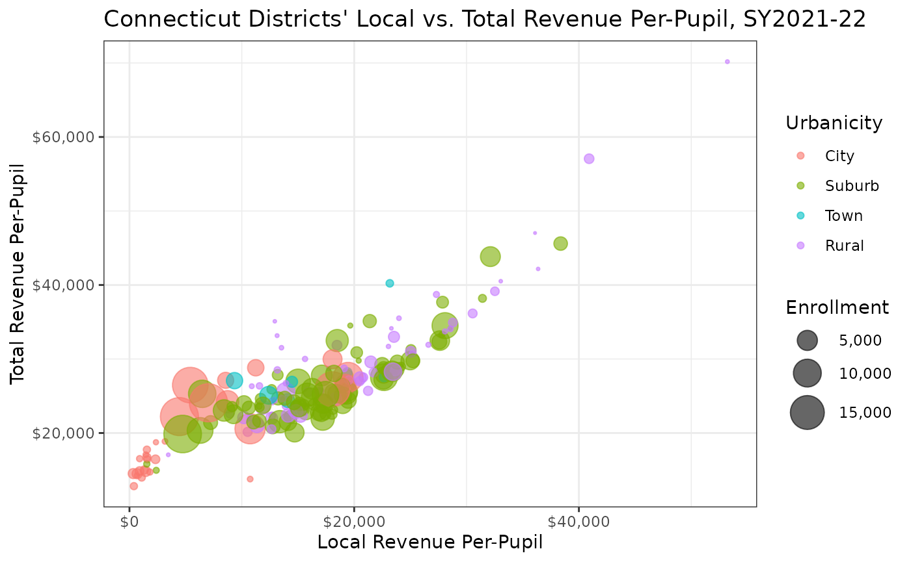

Introduction
The edfinr package provides a simple, consistent
interface for accessing comprehensive education finance data for U.S.
school districts. This vignette will help you get started with the
package’s core functionality.
Core Function: get_finance_data()
The primary function in edfinr is
get_finance_data(), which provides access to comprehensive
school finance data from school years 2011-12 through 2021-22. The
function combines data from multiple sources:
- Financial data: Revenue and expenditure data from the National Center for Education Statistics (NCES) version of the F-33 survey.
- Enrollment: Student counts from NCES Common Core of Data.
- Demographics: Poverty estimates from the U.S. Census Bureau Small Area Income and Poverty Estimates (SAIPE).
- Community characteristics: Income and education data from American Community Survey (ACS).
- Inflation adjustments: Consumer Price Index for All Urban Consumers (CPI-U) data for constant dollar calculations.
Basic Usage
The simplest way to use get_finance_data() is to specify
a year and state. For example, to get finance data for Kentucky school
districts from the 2015-16 school year:
# download "skinny" dataset for a single year and a single staet
ky_sy16 <- get_finance_data(yr = 2016, geo = "KY")
# view the structure of the returned data
glimpse(ky_sy16)## Rows: 173
## Columns: 41
## $ ncesid <chr> "2100030", "2100070", "2100081", "2100090", "2100120",…
## $ year <chr> "2016", "2016", "2016", "2016", "2016", "2016", "2016"…
## $ state <chr> "KY", "KY", "KY", "KY", "KY", "KY", "KY", "KY", "KY", …
## $ dist_name <chr> "Adair County", "Allen County", "Muhlenberg County", "…
## $ enroll <dbl> 2689, 3071, 5023, 363, 3811, 3265, 273, 1371, 718, 277…
## $ rev_total_pp <dbl> 10622.908, 9635.949, 11004.977, 20374.656, 9874.574, 1…
## $ rev_local_pp <dbl> 1922.276, 1924.129, 3204.260, 14935.863, 3189.452, 270…
## $ rev_state_pp <dbl> 7046.858, 6523.608, 6721.481, 5081.578, 5700.866, 6064…
## $ rev_fed_pp <dbl> 1653.7746, 1188.2123, 1079.2355, 357.2145, 984.2561, 1…
## $ rev_total <dbl> 28565000, 29592000, 55278000, 7396000, 37632000, 34758…
## $ rev_local <dbl> 5169000.0, 5909000.0, 16095000.0, 5421718.4, 12155000.…
## $ rev_state <dbl> 18949000, 20034000, 33762000, 1844613, 21726000, 19799…
## $ rev_fed <dbl> 4447000.0, 3649000.0, 5421000.0, 129668.9, 3751000.0, …
## $ rev_total_unadj <dbl> 30303000, 31613000, 58033000, 7621000, 38072000, 36802…
## $ rev_local_unadj <dbl> 5169000, 6166000, 16125000, 5561000, 12156000, 8970000…
## $ rev_state_unadj <dbl> 20687000, 21798000, 36487000, 1927000, 22165000, 21685…
## $ rev_fed_unadj <dbl> 4447000, 3649000, 5421000, 133000, 3751000, 6147000, 3…
## $ exp_cur_pp <dbl> 9461.510, 8820.580, 9074.457, 18002.755, 8372.343, 999…
## $ rev_exp_pp_diff <dbl> 1161.3983, 815.3696, 1930.5196, 2371.9008, 1502.2304, …
## $ exp_cur_st_loc <dbl> 22888000, 25129000, 39656000, 6443000, 29720000, 28532…
## $ exp_cur_fed <dbl> 2554000, 1959000, 5925000, 92000, 2187000, 4090000, 21…
## $ exp_cur_resa <dbl> NA, NA, NA, NA, NA, NA, NA, NA, NA, NA, NA, NA, NA, NA…
## $ exp_cur_total <dbl> 25442000, 27088000, 45581000, 6535000, 31907000, 32622…
## $ cpi_sy12 <dbl> 1.047057, 1.047057, 1.047057, 1.047057, 1.047057, 1.04…
## $ mhi <dbl> 33873, 41166, 40445, 162188, 53513, 39526, 34871, 4392…
## $ mpv <dbl> 86100, 98200, 81400, 604100, 136300, 96500, 107300, 10…
## $ adult_pop <dbl> 12753, 13827, 21649, 1372, 14970, 14736, 902, 5766, 17…
## $ ba_plus_pop <dbl> 2103, 1885, 2627, 1133, 2835, 3419, 158, 880, 478, 139…
## $ ba_plus_pct <dbl> 0.16490238, 0.13632748, 0.12134510, 0.82580175, 0.1893…
## $ total_pop <dbl> 19280, 20631, 31028, 2531, 22158, 21143, 1423, 8054, 3…
## $ student_pop <dbl> 2928, 3633, 4768, 433, 3937, 3253, 249, 1340, 434, 239…
## $ stpov_pop <dbl> 967, 905, 1130, 23, 536, 894, 81, 287, 154, 530, 1288,…
## $ stpov_pct <dbl> 0.33025956, 0.24910542, 0.23699664, 0.05311778, 0.1361…
## $ cong_dist <int> 2101, 2101, 2101, 2103, 2106, 2104, 2104, 2101, 2105, …
## $ state_leaid <chr> "KY-001001000", "KY-002005000", "KY-089445000", "KY-05…
## $ county <chr> "Adair County", "Allen County", "Muhlenberg County", "…
## $ cbsa <chr> "N", "14540", "N", "31140", "23180", "26580", "17140",…
## $ urbanicity <fct> Town, Rural, Rural, Suburb, Town, City, Rural, Rural, …
## $ schlev <chr> "03", "03", "03", "01", "03", "03", "03", "03", "03", …
## $ lea_type <fct> Regular public school district that is not a component…
## $ lea_type_id <int> 1, 1, 1, 1, 1, 1, 1, 1, 1, 1, 1, 1, 1, 1, 1, 1, 1, 1, …Dataset Types: Skinny vs. Full
By default, get_finance_data() returns a “skinny”
dataset with 41 essential variables covering: - District identifiers and
characteristics. - Total revenues by source (local, state, federal). -
Current expenditures. - Key demographic and economic indicators.
For more detailed analysis, you can request the “full” dataset with 89 variables that includes: - All skinny dataset variables. - Detailed expenditure data. - Data on spending of temporary pandemic-related federal funding.
# download the full dataset with detailed expenditure data for a single year/state
ky_full_sy16 <- get_finance_data(yr = "2016", geo = "KY", dataset_type = "full")
# view additional variables in "full" dataset
names(ky_full_sy16)[42:89]## [1] "exp_emp_salary" "exp_emp_bene"
## [3] "exp_textbooks" "exp_utilities"
## [5] "exp_tech_supp" "exp_tech_equip"
## [7] "exp_pay_private_sch" "exp_pay_charter_sch"
## [9] "exp_pay_other_lea" "exp_other_sys_pay"
## [11] "exp_instr_total" "exp_instr_sal"
## [13] "exp_instr_bene" "exp_supp_stu_total"
## [15] "exp_supp_stu_sal" "exp_supp_stu_bene"
## [17] "exp_supp_instr_total" "exp_supp_instr_sal"
## [19] "exp_supp_instr_bene" "exp_supp_gen_admin_total"
## [21] "exp_supp_gen_admin_sal" "exp_supp_gen_admin_bene"
## [23] "exp_supp_sch_admin_total" "exp_supp_sch_admin_sal"
## [25] "exp_supp_sch_admin_bene" "exp_supp_ops_total"
## [27] "exp_supp_ops_sal" "exp_supp_ops_bene"
## [29] "exp_supp_trans_total" "exp_supp_trans_sal"
## [31] "exp_supp_trans_bene" "exp_central_serv_total"
## [33] "exp_central_serv_sal" "exp_central_serv_bene"
## [35] "exp_noninstr_food_total" "exp_noninstr_food_sal"
## [37] "exp_noninstr_food_bene" "exp_noninstr_ent_ops_total"
## [39] "exp_noninstr_ent_ops_bene" "exp_noninstr_other"
## [41] "exp_covid_total" "exp_covid_instr"
## [43] "exp_covid_supp" "exp_covid_cap_out"
## [45] "exp_covid_tech_supp" "exp_covid_tech_equip"
## [47] "exp_covid_supp_plant" "exp_covid_food"Multiple Years and States
The get_finance_data() function makes it easy to access
data across multiple years and states:
# get data for multiple states across multiple years
sec_data <- get_finance_data(
yr = "2018:2022", # years 2018 through 2022
geo = "AL,AR,FL,GA,KY,LA,MS,MO,OK,SC,TN,TX" # comma-separated state codes
)
# get the most recent year of data for all states
us_sy22 <- get_finance_data(yr = 2022, geo = "all")Working with the Data
Once you’ve retrieved the data, you can use standard data manipulation tools to analyze it. Here are some common analysis patterns:
Analyze Local vs. Total Revenue Per-Pupil
# download 2022 data for connecticut
ct_sy22 <- get_finance_data(yr = "2022", geo = "CT")
# plot local revenue vs. total revenue w/ urbanicity + enrollment
ggplot(ct_sy22) +
geom_point(aes(
x = rev_local_pp,
y = rev_total_pp,
color = urbanicity,
size = enroll),
alpha = .6) +
scale_size_area(
max_size = 10,
labels = scales::label_comma()
) +
scale_x_continuous(labels = scales::label_dollar()) +
scale_y_continuous(labels = scales::label_dollar()) +
labs(
title = "Connecticut Districts' Local vs. Total Revenue Per-Pupil, SY2021-22",
x = "Local Revenue Per-Pupil",
y = "Total Revenue Per-Pupil",
size = "Enrollment",
color = "Urbanicity") +
theme_bw()
Analyzing Revenue Sources by Urbanicity
# compare revenue sources across districts
revenue_analysis <- ct_sy22 |>
mutate(
pct_local = rev_local / rev_total,
pct_state = rev_state / rev_total,
pct_federal = rev_fed / rev_total
) |>
select(dist_name, urbanicity, enroll, pct_local, pct_state, pct_federal) |>
group_by(urbanicity) |>
summarize(
avg_pct_local = mean(pct_local, na.rm = TRUE),
avg_pct_state = mean(pct_state, na.rm = TRUE),
avg_pct_federal = mean(pct_federal, na.rm = TRUE),
n_districts = n(),
enrollment = sum(enroll, na.rm = TRUE)
)
print(revenue_analysis)## # A tibble: 4 × 6
## urbanicity avg_pct_local avg_pct_state avg_pct_federal n_districts enrollment
## <fct> <dbl> <dbl> <dbl> <int> <dbl>
## 1 City 0.250 0.608 0.143 29 126751
## 2 Suburb 0.649 0.289 0.0623 85 285922
## 3 Town 0.584 0.351 0.0649 8 14823
## 4 Rural 0.649 0.303 0.0490 65 52477Additional Resources
For more information about the data and methods used in this package:
- Use
list_variables()to see all available variables and their descriptions. - Use
get_states()to see valid state codes. - See the “CPI Adjustments” vignette for information about inflation adjustments.
- See the “Data Sources and Methods” vignette for detailed methodology.